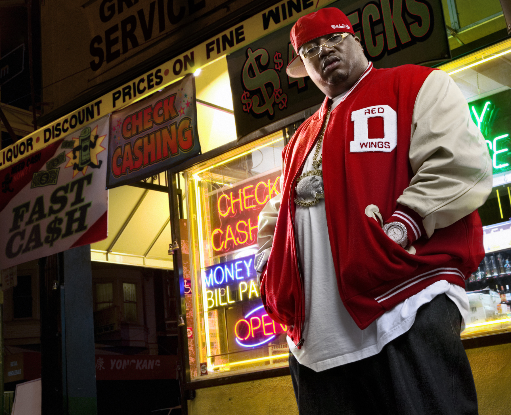
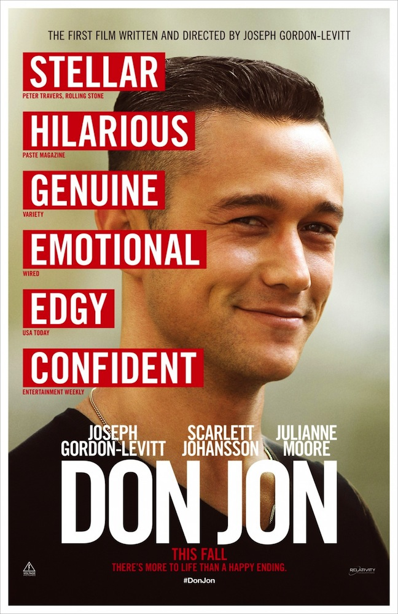

PAULEY PAVILION
DOORS 6:30PM
SHOW 8:00PM
SHOW 8:00PM
TYGA

Compton-born Michael Ray Nguyen-Stevenson, or Tyga, debuted in 2008 with the single “Coconut Juice” featuring
cousin Travie McCoy. Since then he has regularly topped the charts with singles like “Faded”, “Make It Nasty” and
“Rack City”. Currently signed to Young Money Entertainment, Cash Money Records and Universal Republic Records,
he’s collaborated with the likes of Young Money, Chris Brown, Lil Wayne, Drake and 2 Chainz.
cousin Travie McCoy. Since then he has regularly topped the charts with singles like “Faded”, “Make It Nasty” and
“Rack City”. Currently signed to Young Money Entertainment, Cash Money Records and Universal Republic Records,
he’s collaborated with the likes of Young Money, Chris Brown, Lil Wayne, Drake and 2 Chainz.
E-40

Earl Stevens, AKA E-40, hails from Vallejo, California and is a rapper
heavily associated with the Bay Area "hyphy
movement". Active in the music scene since 1990, he gained even more mainstream prominence with his Lil
Jon-produced single “Tell Me When to Go” in 2006. He has worked with rappers like Juicy J, Twista, Kendrick Lamar,
Too Short, 2 Chainz and Snoop Dogg, and is most recently known for his 2012 single “Function".
movement". Active in the music scene since 1990, he gained even more mainstream prominence with his Lil
Jon-produced single “Tell Me When to Go” in 2006. He has worked with rappers like Juicy J, Twista, Kendrick Lamar,
Too Short, 2 Chainz and Snoop Dogg, and is most recently known for his 2012 single “Function".
DISCOUNTED PARKING & CONCESSIONS
$8 PARKING AFTER 4:30PM
IN THE FOLLOWING:
LOT 11, SV, CHS VISITOR PARKING,
STR. E B LEVEL 1, TIVERTON,
STR. 2, STR. 32, LOT 36
IN THE FOLLOWING:
LOT 11, SV, CHS VISITOR PARKING,
STR. E B LEVEL 1, TIVERTON,
STR. 2, STR. 32, LOT 36
AT THE CONCERT & DANCE
SMALL HOT DOG $2
PRETZEL $2
CHURRO $1
MED. DRINK $1
BOTTLED WATER $1
PRETZEL $2
CHURRO $1
MED. DRINK $1
BOTTLED WATER $1
ACKERMAN GRAND BALLROOM
STARTS 11:00PM
DON JON

Campus Events Commission presents a free sneak of DON JON. Joseph Gordon-
Levitt plays Jon Martello, whose ability to entice women into romance is only
secondary to the satisfaction he gets from watching pornography. This
becomes a problem when he meets Barbara (Scarlett Johansson) who lives
vicariously through romantic Hollywood movies about true love. Tweet or
write a FB status with your thoughts #DonJonUCLA !
Levitt plays Jon Martello, whose ability to entice women into romance is only
secondary to the satisfaction he gets from watching pornography. This
becomes a problem when he meets Barbara (Scarlett Johansson) who lives
vicariously through romantic Hollywood movies about true love. Tweet or
write a FB status with your thoughts #DonJonUCLA !
PAULEY PAVILION FLOOR
11:00PM
DJ SARS
BENTLEY
MONTES
MONTES
BRUIN PLAZA
9:30PM
PHOTOBOOTH
FREE SNACKS
REFRESHMENTS
DJ SET
MUST READ
Only small purses will be allowed into Pauley Pavilion for the concert and dance and into Ackerman Grand Ballroom for the film. All large bags and backpacks will be turned away at security checks before entrance into the venues. All alcohol and drug paraphernalia will not be tolerated. Students under the influence will not be admitted. Bruincard and wristband required at entry for film and concert.
CONCERT
When/Where can I get a wristband for the concert?
Wristband distribution will occur on Sunday, September 22nd at 10AM in Bruin Plaza, De Neve Plaza and Hedrick Summit. Distribution will occur in Bruin Plaza for all students (Bruincard required). Only hill residents will be able to pick up wristbands at De Neve Plaza and Hedrick Summit (Bruincard and room key required). Wristband distribution for late move-in Hill residents will occur at 4PM in De Neve Plaza (Bruincard and room key required).
How can I get a wristband for the concert?
Bruincards are required during wristband distribution in Bruin Plaza. Bruincard and room keys are required for wristband distribution at De Neve Plaza and Hedrick Summit. Students may not use multiple Bruincards to pick up wristbands for fellow students for the concert and film - only one wristband per Bruincard per student.
How will wristbanding work for the concert?
There will be four different colored wristbands for the concert. Each color coordinates to a section in Pauley Pavilion. Floor wristbands will be distributed first, then bleachers second, then middle bowl third and upper bowl wristbands will be distributed last. Wristbands will be distributed on a first come first serve basis. If you want to sit with your friends, make sure you stand in line together and receive the same colored wristband. Bruincard and wristband required at entry.
FILM
How do I get into the film?
Wristbands for the film sneak will be distributed on Bruinwalk at 8PM on a first come first serve basis. The film will start at 11PM. Students may not use multiple Bruincards to pick up wristbands for fellow students for the concert and film - only one wristband per Bruincard per student. Bruincard and wristband required at entry.
DANCE
How do I get into the dance?
After Pauley is cleared of all concert attendees, the dance floor will be set up and the dance will begin at 11PM. The entrance to the dance will be located on the south side of Pauley Pavilion. There will be no wristbands for the dance; however, a Bruincard is required for entry. Capacity is limited.
LOUNGE
No wristbands will be required for the lounge.GENERAL
Where can I get a BruinCard? 123 Kerckhoff Hall
When can I get a BruinCard? The office will be open on Spetember 21st and 22nd from 12PM to 5PM.
Campus Events Commission
Commissioner, Jessica KimCultural Affairs Commission
Commissioner, Jessica TrumbleUndergraduate Students Association Council
UCLA Chancellor's Office
UCLA Recreation
Mick DelucaKenn Heller
Rich Mylin
Dennis Koehne
Susan Brown
Ignacio Vega
Nicole Widmer
Mayra Cortez
Kiran Mistry
Jamie Andersen
Paul Brown
Jessica Dawson
Tandy Girotti
Cindy Bolton
Luis Sanchez
Jason Zeck
Chett Miller
UCLA Events Office
Dan FederoffElla Gogel
ASUCLA
Roy ChampawatPatty Zimmerman
Lorrie Klimoski
Janine La Croix
Debbie Simmons
UCLA Student Organizations, Leadership and Engagement (SOLE)
Pam CysnerKris Kaupalolo
Mike Cohn
Zoila De La Pena
UCLA Fraternity and Sorority Relations
Mande AdamsTroy Bartels
Carissa Requejo
Bruin Leaders Project
Matt PanopioUCLA Student Risk Education Committee
UCLA New Student Welcome
Site Design
Rebecca RusheenVishal Yadav
Keaton Boyle